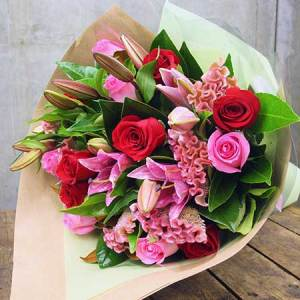
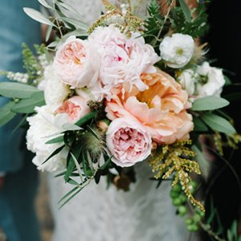
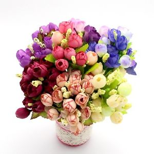

Vă oferim cea mai înaltă calitate !
Vrei să îi demonstrezi că zâmbetul ei contează? Fă-i o surpriză şi impresioneaz-o alegând florile ei preferate! Dacă nu o cunoşti suficient de bine, convinge-o că senzualitatea fiecărei femei în parte, poate fi descoperită în cel mai frumos mod posibil: oferindu-i un buchet de flori. Florăriile Magnolia îţi arată cum! Iată câteva sugestii care te pot ajuta să ieşi în evidentă sau puteți suna la numerele de telefon 0759 031 085 sau 0264 450 978 030
Conform unei superstiţii româneşti, unele fete tinere nemăritate îşi visează ursitul în noaptea de Sfântul Andrei. Altele primesc flori de la el. Pentru Andreea şi Andrei floriştii noştri au creau cele mai inspirate buchete şi aranjamente. Spune-le un „La mulţi ani!” din suflet oferindu-le un cadou floral ce le va rămâne în amintire. Sărbătoriţii zilei merită tot ce e mai frumos asa ca ofera flori de Sfantul Andrei. Credem cu tărie că florile [...]
Dacă ești în căutarea unor buchete de lux, am creat o colecție specială...


